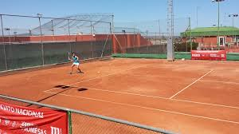

Como hemos puesto en nuestra pagina principal, las clases se dividiran en dos, desde las 10:00 a las 14:45 . Haremos un descanso para comer y luego continuaremos desde las 18:00 a las 20:45.
Las clases se serán de Lunes a Viernes y el finde semana dejaremos que los alumnos den una vuelta por la ciudad.Siempre estaran vigilados por un adulto.
Los precios varian dependiendo del tiempo de estancia.
La primera semana se pagaran 500$, la segunda serían 600$, y así sucesivamente. Cada semana que se agregue serán 100$ más respecto al precio inicial.
Dependera de sus edades, ya que, creemos que las habilidades que podria tener un niño de 12 años, no puede ser tan buena como la de otro niño de 17. Esto se aplicara tanto para niños como para adultos.
Sí, contamos con una equipacion completa para el tenis , ya sea para niños o adultos.
Si cuenta con más dudas consulte nuestra página principal y dejenosla. Nos llegará de inmediato y resolveremos su duda sin ningun problema.
| ¿En que consiste el Tenis? | Consiste en golpear una pelota con una raqueta en un campo de juego dividido por una red. |
| ¿Cuánto dura un partido? | Podria durar entre 30 minutos y 5 horas. |
| ¿Cuáles son las conductas contrarias que no se permiten en el tenis? | Golpear la pelota fuera de los limites de la cancha , no devolver la pelota después de un saque válido y tocar la red con la raqueta. |
